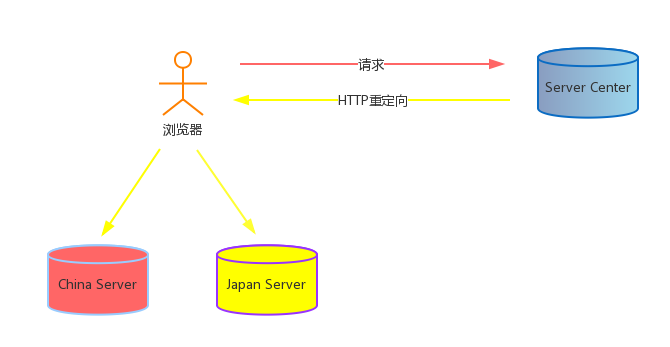

HELLO,
MY NAME IS XuJianGuo AND THIS IS MY BLOG
HTTP重定向
负载均衡模型
用HTTP重定向来作负载均衡的情况还是很常见的，假设你访问外国的网站www.waiguo.com，你需要下载里面的一个2G的文件，你点击之后发起了 HTTP请求，外国的服务器检查到这个是来自中国的IP，刚才自己有个中国的服务器放了要下载的资源，就发起一个HTTP重定向，将请求定向到中国 的服务器上，然后你就从中国的服务器下载资源。
在上面的情况中，我们的加载速度是大大提高了的，因为你访问中国的机器当然比你访问外国的要快，通过HTTP重定向，可以将请求转发到其他资源上， 减少了单台机器的负载压力。
Example
/**
* Created by PhpStorm.
* User: xujianguo
* Date: 15-8-9
* Time: 上午10:34
*/
//主机域名
$domains = array(
'www.baidu.com',
'www.hao123.com'
);
//随机选择策略
$index = substr(microtime(), 5, 3) % count($domains);
$domain = $domains[$index];
//重定向
header("Location:http://$domain");
我们用CURL命令访问，并且查看HTTP报头。可以发现两次同样的请求被重定向到不同的网址去了，实现了简单的负载均衡。
xujianguo@guo:~$ curl -i http://www.xjg.com:81/LoadBalance/http/redirect.php
HTTP/1.1 302 Moved Temporarily
Server: nginx/1.6.2
Date: Sun, 09 Aug 2015 02:56:49 GMT
Content-Type: text/html
Transfer-Encoding: chunked
Connection: keep-alive
X-Powered-By: PHP/5.4.42
Location: http://www.baidu.com
xujianguo@guo:~$ curl -i http://www.xjg.com:81/LoadBalance/http/redirect.php
HTTP/1.1 302 Moved Temporarily
Server: nginx/1.6.2
Date: Sun, 09 Aug 2015 02:56:51 GMT
Content-Type: text/html
Transfer-Encoding: chunked
Connection: keep-alive
X-Powered-By: PHP/5.4.42
Location: http://www.hao123.com